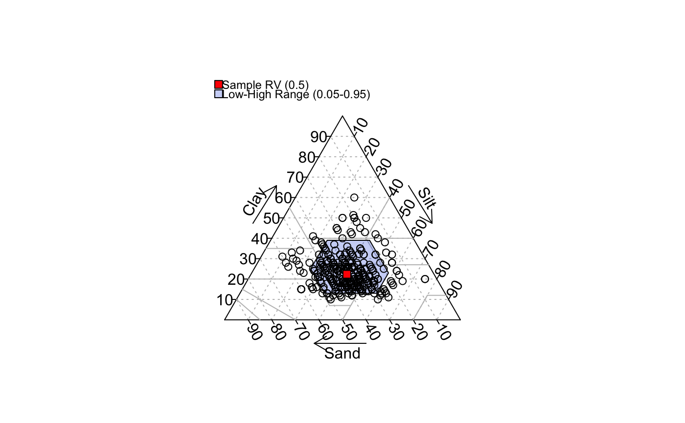
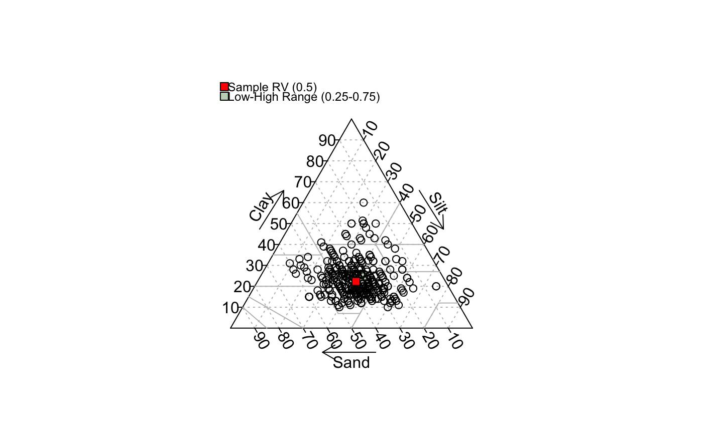
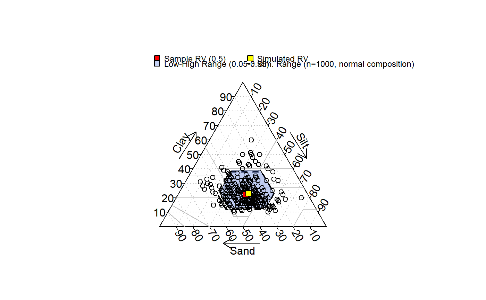

texture.triangle.low.rv.high.RdThis function accepts soil texture components (sand, silt, and clay percentages) and plots a soil texture triangle with a "representative value" (point) and low-high region (polygon) defined by quantiles (estimated with Hmisc::hdquantile). Marginal quantiles of sand, silt, and clay are used to define the boundary of a low-high region that encloses a severall likely soil texture classes based on the values in ssc. The defualt settings place the RV symbol at the texture defined by marginal medians of sand, silt, and clay. The default low-high region is defined by the 5th and 95th marginal percentiles of sand, silt, and clay.
textureTriangleSummary(ssc, p=c(0.05, 0.5, 0.95), delta=1, texture.names=FALSE, pop.rv.col='red', range.col='RoyalBlue', range.alpha=75, sim=FALSE, sim.n=1000, sim.rv.col='yellow', sim.col=grey(0.95), sim.alpha=150, legend.cex=0.75, ...)
| ssc | a matrix-like object with columns: 'sand', 'silt', 'clay', values are percentages that should add to 100. |
|---|---|
| p | percentiles defining 'low', 'representative value', and 'high' |
| delta | step-size used to form low-high region |
| texture.names | logical, should soil texture names be added to the figure? |
| pop.rv.col | the symbol color used to denote the population representative value on the texture triangle |
| range.col | color of the polygon enclosing the low-high region |
| range.alpha | transparency of the low-high range polygon (0-255) |
| sim | optional simulation of low-rv-high values based on a composition drawn from normal distributions, this requires the `compositions` package |
| sim.n | number of simulated sand, silt, and clay values |
| sim.rv.col | the symbol color used to denote the simulated representative value on the texture triangle |
| sim.col | color of the simulated low-high range polygon |
| sim.alpha | transparency of the simulated low-high range polygon (0-255) |
| legend.cex | scaling factor for legend |
| … | further arguments passed to |
Simulation of samd, silt, and clay values requires the `compositions` package.
When using this function within .Rmd, be sure to explicitly load the `compositions` package via library and use the chunk option fig.keep='last'. For some reason, the soil.texture function generates two figures when used within a .Rmd, hence the strange hack.
Simulated sand, silt, and clay values are based on sampling from a normal distribution as performed by rnorm.acomp in the `comppositions` package. The mean vector of the sand, silt, and clay values, along with covariance matrix derived from ssc are used to parametrize sampling.
A high-level plot as generated by soil.texture.
triax.points, soil.texture
# sample data data(loafercreek, package='soilDB') # extract sand, silt, clay proportions x <- na.omit(data.frame(sand=loafercreek$sand, silt=loafercreek$silt, clay=loafercreek$clay)) # test out the function textureTriangleSummary(x, p=c(0.05, 0.5, 0.95))#> Warning: At least one set of proportions does not equal one.#> Warning: At least one set of proportions does not equal one.#> Warning: At least one set of proportions does not equal one.#> Warning: At least one set of proportions does not equal one.# simulate compositional data from source mean / var-covar matrix if(require(compositions)) { # add simulated low-rv-high textureTriangleSummary(x, p=c(0.05, 0.5, 0.95), sim=TRUE) }#>#> Warning: package 'compositions' was built under R version 3.5.3#>#> Warning: package 'tensorA' was built under R version 3.5.2#> #>#> #> #>#>#> Warning: package 'robustbase' was built under R version 3.5.3#>#> Warning: package 'energy' was built under R version 3.5.3#>#> Warning: package 'bayesm' was built under R version 3.5.3#> #>#> #>#> #> #>#> #> #>#> #> #>#> Warning: At least one set of proportions does not equal one.#> Warning: At least one set of proportions does not equal one.